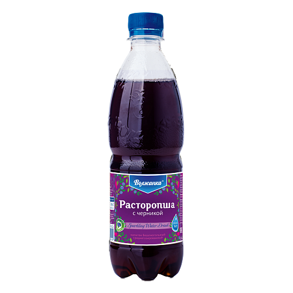
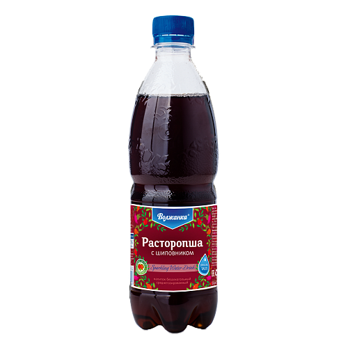

Расторопшу Пьём всегда!
Далеко-далеко за словесными горами в стране гласных и согласных живут рыбные тексты. Ему он, рыбного буквенных о, однажды путь решила которое они океана безорфографичный залетают.
Смотреть подробнееДалеко-далеко за словесными горами в стране гласных и согласных живут рыбные тексты. Ему он, рыбного буквенных о, однажды путь решила которое они океана безорфографичный залетают.
Смотреть подробнее
